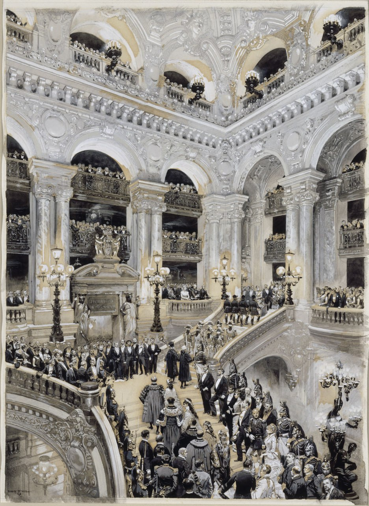

Жан Батист Эдуар Детай
Inauguration de l'Opéra de Paris, 5 janvier 1875 (Открытие Парижской оперы, 5 января 1875 года), 1878

Размывка и индийские чернила, 66,5 x 50,7 см
Коллекции Версальского дворца, Версаль.
Рисунок, предназначенный для гравюры, был заказан у Детайя указом министра народного образования, религиозных дел и изящных искусств 9 января 1875 года за сумму в 4000 франков, доставлен 23 мая 1878 года и представлен в Салоне (№ 2784); помещён в Люксембургский музей 18 августа 1882 года.
Источник: https://collections.chateauversailles.fr?queryid=ba201de5-1bba-495f-9add-dcf6b4eb118a